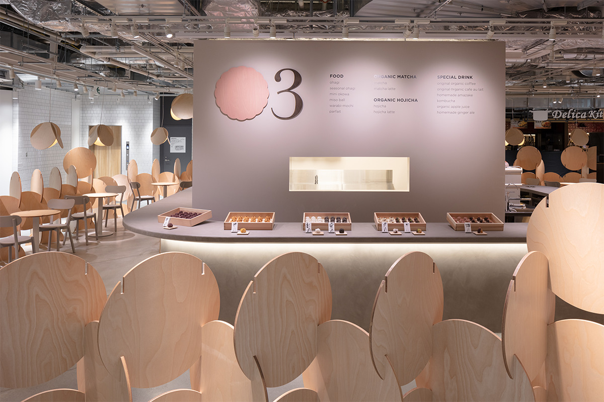
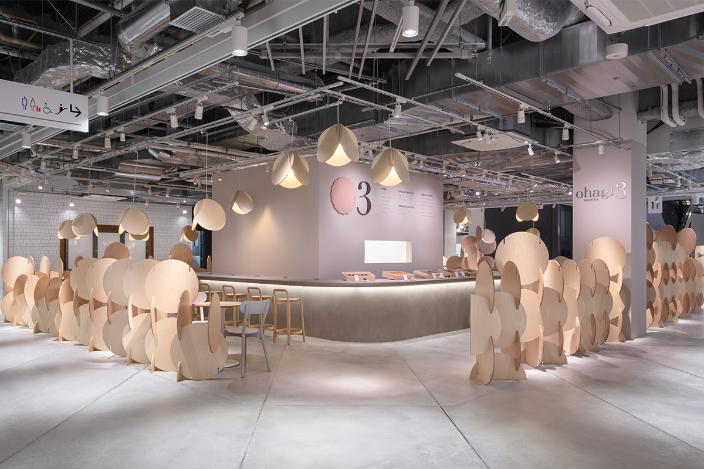
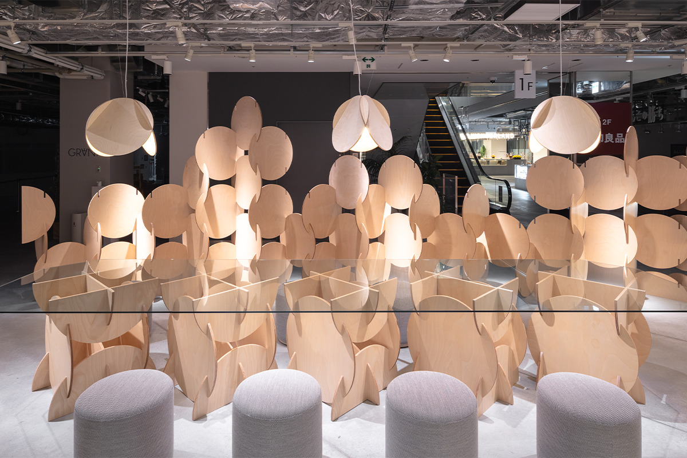
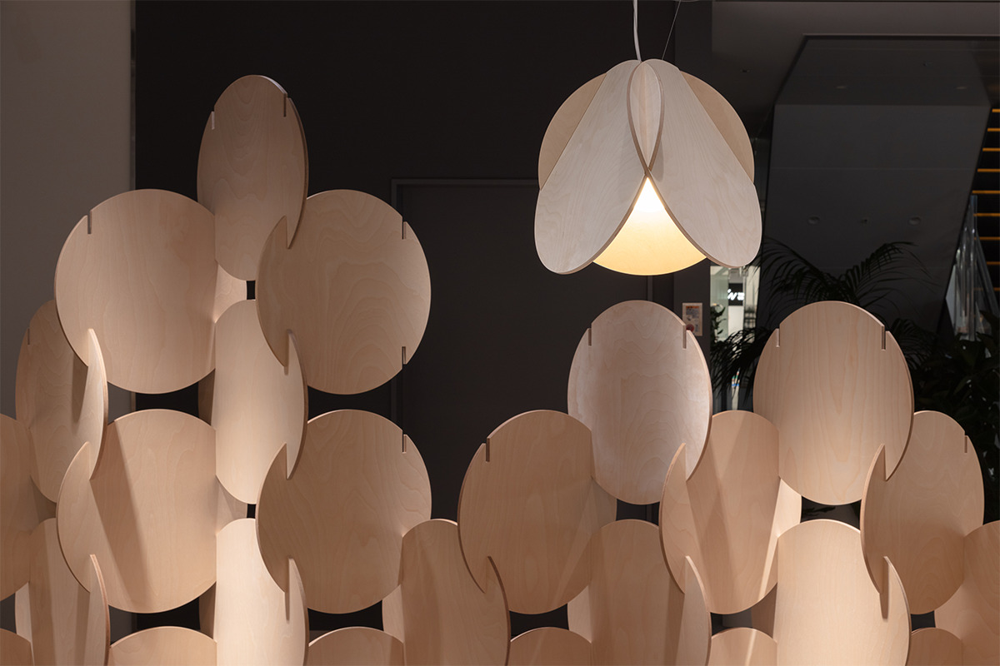
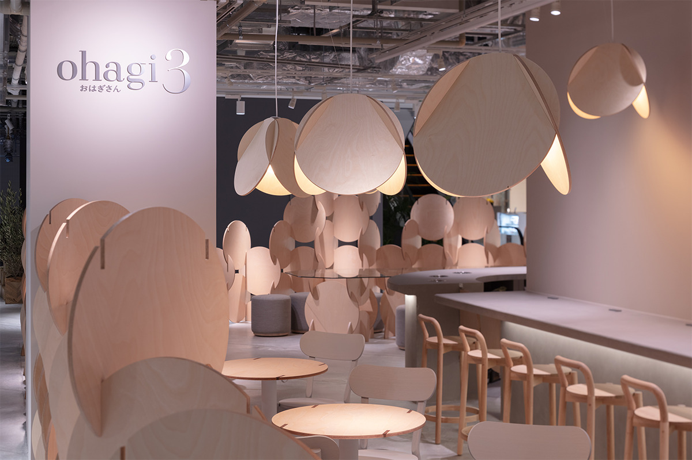
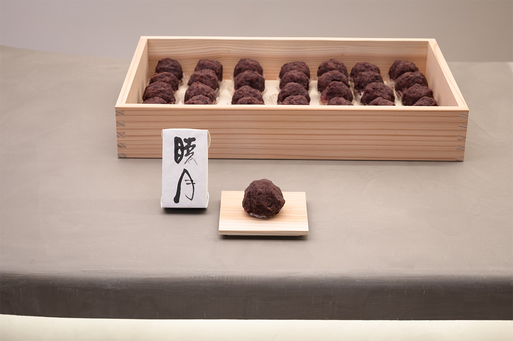

Префектура Айти · Нагоя, Сакаэ · сладости и архитектура
ohagi3 FLAGSHIP SAKAE: охаги без добавок в интерьере из деревянных кругов

Охаги, рисовые шарики в сладкой бобовой пасте, в Японии едят веками. Нагойская марка ohagi3 делает их без добавок, а в 2022 году открыла первое кафе, где вся обстановка собрана из деревянных кругов.
Марка
Охаги на каждый день
Марка ohagi3 (читается «охаги-сан») появилась в Нагое в 2017 году, а к 2022 году у неё было 8 магазинов по всей Японии. Её идея проста: сладость, которую может спокойно съесть кто угодно. Охаги здесь лепят вручную, по одной, и обходятся без пищевых добавок. Кроме охаги марка делает данго, дайфуку и другие японские сладости, переложенные на современный лад.
Магазины ohagi3 бывают двух видов. В обычных продают охаги и сладости навынос. В кафе к ним добавляют японские десерты и напитки: чай и кофе из сырья органического выращивания.
Первое такое кафе, ohagi3 FLAGSHIP SAKAE, открылось в 2022 году в Сакаэ, торговом квартале в центре Нагои. Оно занимает место на первом этаже Maruei Galleria, торгового центра, построенного там, где раньше стоял универмаг «Маруэй».
Архитекторы
Бюро KAMIYA ARCHITECTS
Интерьер, мебель и новый облик марки придумало бюро KAMIYA ARCHITECTS из токийского района Аояма. Его основал в 2017 году архитектор Сюхэй Камия, который до этого работал у Кэнго Кумы и у датчанина Бьярке Ингельса. Бюро проектирует здания самого разного масштаба и называет свой подход «брендинговой архитектурой»: здание и всё, что с ним связано, должно помогать делу заказчика долго и устойчиво расти. Среди его работ проект HARIO Satellite.
Интерьер
Круги со всех сторон
Кафе стоит на самом видном месте, прямо напротив главного входа в здание, и от архитекторов ждали чего-то запоминающегося. Они взяли круг (это и знак ohagi3, и форма самой охаги) и построили на нём всю мебель.

Со стороны проходов, которые окружают кафе с четырёх сторон, его отделяет «охаги-стена». Круги в ней соединены по приёму традиционного японского сращивания дерева и стоят друг на друге, как детские кубики. Из таких же круглых деталей сделаны два вида столов. У «охаги-стола» круг служит столешницей, а вставки из дерева другого тона на ней работают как украшение. «Большой охаги-стол» на 12 человек собран из части стены и стеклянной столешницы.
Лампа «охаги» обыгрывает второе ключевое слово марки, цифру 3: это три круга, сложенные вместе. Такие лампы собирались поставить и в других магазинах ohagi3, так что лампа стала знаком всей марки.


Облик
Марка, собранная вокруг круга
Бюро KAMIYA ARCHITECTS отвечало не только за интерьер. Оно взялось за обновление всей марки к открытию кафе нового формата и вместе с графическим дизайнером перерисовало логотип. Новый знак составлен из соединённых кругов и одинаково хорошо смотрится на стаканчиках, бумажных пакетах и других мелочах. Архитекторы продумали и вывески в зале, и графику, и даже посуду, на которой подают сладости, чтобы всё в кафе говорило об одном.

Меню
Что попробовать
В ohagi3 внимательно выбирают каждый продукт: охаги без добавок, органические напитки, блюда без глютена. Вместо белого сахара берут нерафинированный тростниковый. Главный товар, охаги ручной работы, в 2022 году был представлен 6–8 видами, постоянными и сезонными.

Напитков в 2022 году было больше 40. Органический матча и ходзитя (обжаренный зелёный чай) делают из чая, который растёт выше 350 метров над уровнем моря. Органический кофе смешивают специально под охаги. Есть амадзакэ, сладкий рисовый напиток, который здесь подают как способ бороться с пищевыми отходами, и комбуча, ферментированный чайный напиток.
ohagi3 FLAGSHIP SAKAE
- Адрес
- префектура Айти, Нагоя, район Нака, Сакаэ, 3-3-1, Maruei Galleria, 1-й этаж
- Телефон
- +81 52-243-0893
Фото: Такуми Ота.